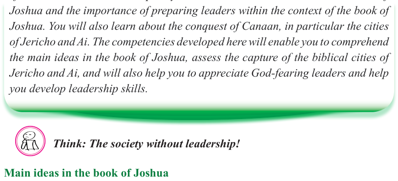

Bible Knowledge


Form Two
Tanzania Institute of Education (TIE)
52

Introduction
The famous leadership quote, ‘Everything rises and falls on leadership’ is highlighting the crucial role of leadership in achieving success and positive outcomes. Potentially, having good leadership assures success and development of an institution. In this chapter, you will learn the main ideas in the book of
Joshua and the importance of preparing leaders within the context of the book of
Joshua. You will also learn about the conquest of Canaan, in particular the cities of Jericho and Ai. The competencies developed here will enable you to comprehend the main ideas in the book of Joshua, assess the capture of the biblical cities of
Jericho and Ai, and will also help you to appreciate God-fearing leaders and help you develop leadership skills.
Think: The society without leadership!
Main ideas in the book of Joshua
The book of Joshua belongs to the Deuteronomistic history books. The book explains the military campaigns against the tribes in the Promised Land, and the division of the land among the twelve tribes of Israel. Relevantly, the book gives a clear emphasis on God’s faithfulness to His covenant and the importance of obedience to
Him. In his farewell speech, Joshua reminded the people about God’s goodness and faithfulness in their lives as a chosen nation, “You know with all your heart and soul that not one of all the good promises the Lord your God gave you has failed. Every promise has come true” (Joshua 23: 14). Joshua’s book marks the transition of Israel from wandering in the wilderness to inheriting the Promised Land. The land flows with milk and honey — the land endowed with potentials and possibilities. The book of Joshua stands as a clear demonstration of God’s covenant, faithfulness, and of the necessity of trusting and obeying Him.


Chapter
Four

Leadership